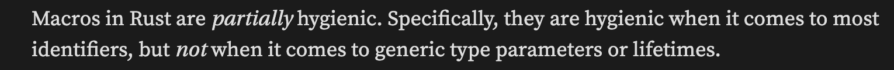

https://dtolnay.github.io/rust-quiz
因为 Quiz 是乱序的，所以完成进度也是乱序的
Quiz 24：关于宏的 ‘hygiene’
https://dtolnay.github.io/rust-quiz/24
What is the output of this Rust program?
fn main() {
let x: u8 = 1;
const K: u8 = 2;
macro_rules! m {
() => {
print!("{}{}", x, K);
};
}
{
let x: u8 = 3;
const K: u8 = 4;
m!();
}
}
解答
输出 14
对于宏而言有一个概念叫 hygiene，中文是【卫生】的意思，由【宏如何处理外部变量】来区分是否 hygiene
有一个 reddit 上对此的讨论，摘抄一个回答：
For example, if you declare a variable named x inside a macro and you happen to call that macro on an x from somewhere else, it won’t suddenly and magically cause things to break because the compiler will know that they’re two different things.
(The gist is that macros in languages like C have some very surprising misbehaviours and “hygienic” macros will behave more like functions when it comes to things like variable scopes and order of operations.)
如果编译器不处理出现在宏里的变量名，而是等着直接展开（如 C 语言），那么这个应该算作不卫生，因为可能会出现外部变量命名为 a，而宏内使用了 a 变量，使用结果会因为外部变量命名不同而有变化。
Rust 是门“部分卫生”的语言，会对一部分的外部变量进行处理。但是仅限本地变量，对 const 不会做处理（const 变量会被认为是个普通的单词而不是变量）。因此在这题里，Rust 会先把外边的 x 编进宏内，之后再进行展开，最终打印 14。
